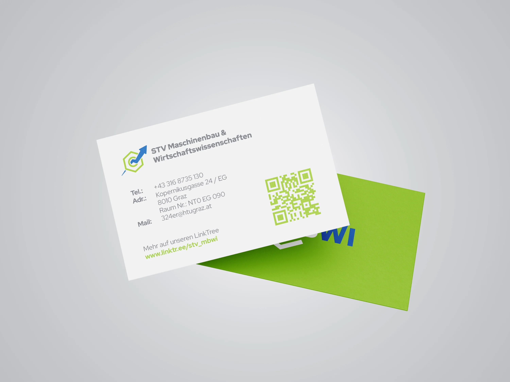
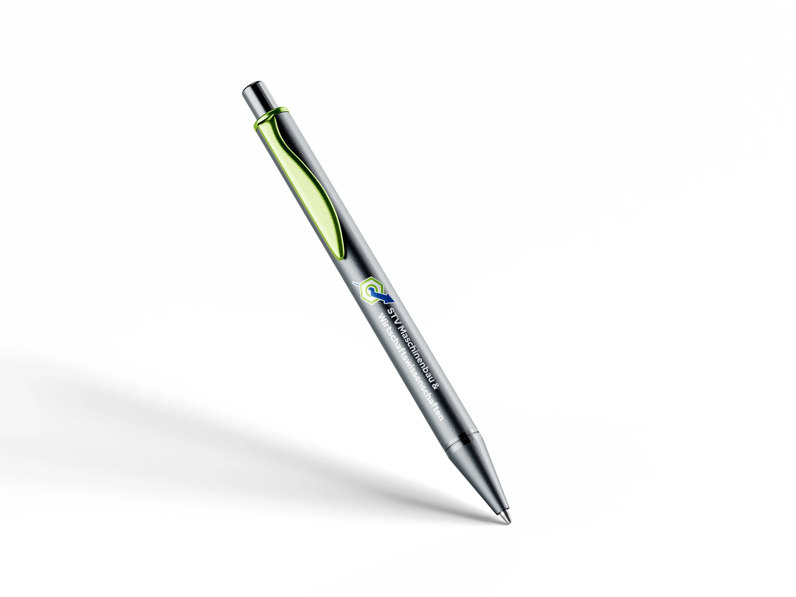
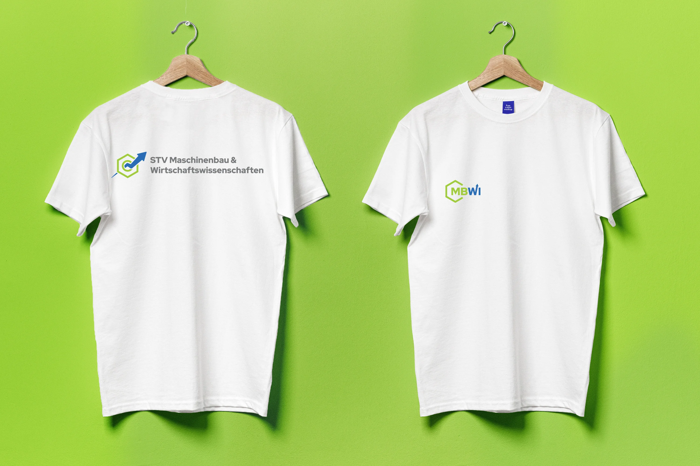
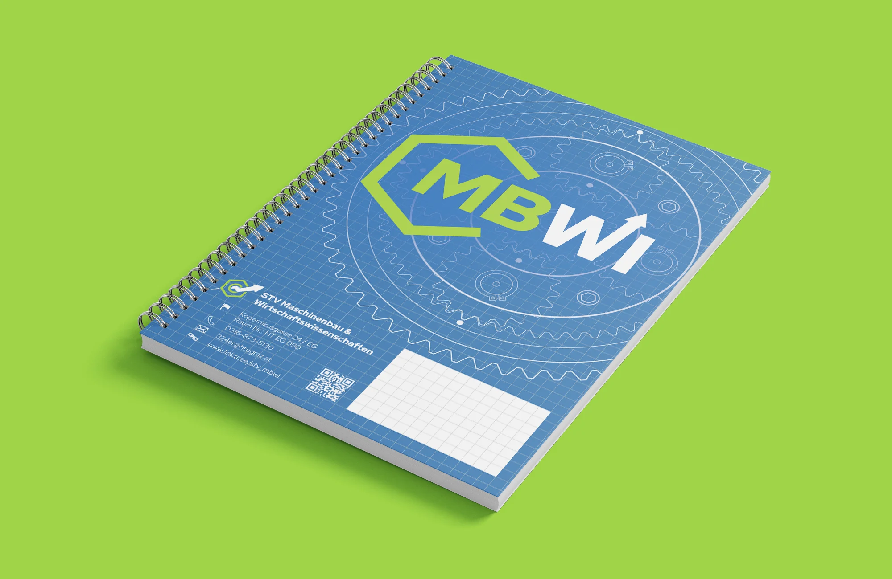

Brand Manual:
Click here to Download the pdf and have a look!
Old Logo
In addition to the combined word and imagerative mark, a primarily Image brand has been created. This decision was made as the Client wanted to be able to present the full title of the 'Organisation' with the Logo. This wouldn't have been able with the main logo without overloading it as it happened with the old version.
New Logo
The new logo provides solutions to the problems of the old logo. The information is condensed and a new symbol, a screw nut, supersedes the cog resulting in a less overloaded and visually clear logo.
Imagebrand:
In addition to the combined word and imagerative mark, a primarily Image
brand has been created.
This decision was made as the Client wanted to be able to present the full title
of the 'Organisation' with the Logo. This wouldn't have been able with the main
logo without overloading it as it happened with the old version.



Print Merch:
In addition to the combined word and imagerative mark, a primarily Image
brand has been created.
This decision was made as the Client wanted to be able to present the full title
of the 'Organisation' with the Logo. This wouldn't have been able with the main
logo without overloading it as it happened with the old version.
Motion Graphic:
For the Social Media as well as on campus appearance, the logo was animated to give the redesign some extra attention and highlight that that students remember.